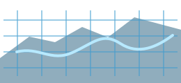
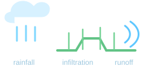
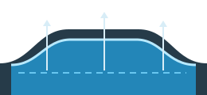
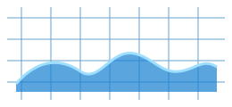
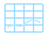

격자 기반 분포형 모형
유역을 격자로 이산화하여 강우, 지형과 수문 반응을 공간적으로 연속 해석합니다.

유역을 격자로 이산화하여 강우, 지형과 수문 반응을 공간적으로 연속 해석합니다.

강우, 침투, 지표 및 지표하 유출을 물리 기반으로 연계하여 해석합니다.

동역학파 기반의 1차원 하천 흐름과 구조물 운영을 정밀하게 모의합니다.

격자 기반 2차원 범람 해석으로 홍수 확산과 침수 범위를 정밀하게 예측합니다.

강우와 기상 입력에서 유역 수문, 하천과 범람원 해석, 결과 분석까지 연결합니다.

격자 유역하천 1D범람 2D결과 분석공간강우, Green-Ampt 침투, 지표·지표하 유출, 운동파 흐름추적, 장기수문과 융설 해석을 지원합니다.
단면 기반 1D 동역학파 하천망, 수리구조물과 2D 홍수범람 기능을 개발·시험하고 있습니다.
하천과 범람원 사이의 양방향 유량 교환과 연계 물수지를 시험하고 있습니다.
공간·시간에 따라 변화하는 수문·수리 결과를 지도와 그래프로 분석합니다.
세부 개발상태는 개발 현황에서 확인할 수 있습니다.
공간분포 및 레이더 강우를 이용한 홍수유출 해석.
장기간 물수지와 적설·융설을 고려한 수문해석.
장기 수문과 유역 물수지 분석.
MPI를 이용한 분포형 강우유출 모형의 병렬계산 연구.
K-DRUM과 지하수 모형을 연계한 물순환 연구.
산불피해 후 극한호우에 따른 유출반응 분석.
계산, 입력자료 작성과 결과 분석을 역할별 프로그램으로 구성하고 있습니다.
분포형 수문과 하천·범람 계산을 수행하는 핵심 엔진입니다.
프로젝트 설정, 시계열, 지형과 단면 자료를 작성하고 입력자료를 생성합니다.
수문·수리 결과를 지도, 시계열과 그래프로 분석합니다.
고해상도 지형과 하천 형상, 가상 하상 생성에 활용하는 모듈입니다.
계산 결과와 Viewer 사이의 자료 교환에 NetCDF 중심 출력체계를 사용합니다.
하구의 종·연직 2차원 수동역학과 염분해석을 위한 별도 연구 프로토타입입니다.
K-DRUM은 K-water MyWater의 K-Series 기술 소프트웨어에서 소개되고 있습니다.
MyWater K-Series · K-water 연구원
기관 정보와 공식 안내는 K-water 홈페이지를 참고해 주세요.